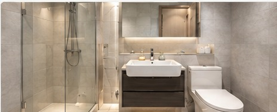

홈 > 연천 집수리
LOCAL HOME REPAIR
연천 지역 출장 집수리
연천 지역의 욕실·주방 수리와 방충망, 조명, 타일 등 생활 집수리를 현장에 맞춰 상담합니다.

연천에서 상담 가능한 집수리
연천 집수리 안내
연천 지역의 욕실·주방 수리와 방충망, 조명, 타일 등 생활 집수리를 현장에 맞춰 상담합니다.
현장 상태와 작업 범위를 먼저 확인한 뒤 필요한 작업을 안내합니다. 사진을 준비해주시면 전화 상담에 도움이 됩니다.
연천 집수리 자주 묻는 질문
- Q. 연천에서 출장 집수리가 가능한가요?
- A. 연천 지역은 출장 가능 지역으로 안내하고 있으며, 작업 내용과 위치를 전화로 상담해 일정과 작업 범위를 확인합니다.
- Q. 연천 집수리 상담은 어떻게 하나요?
- A. 현재 상태가 보이는 사진을 준비해 전화 상담을 하시면 필요한 작업 내용을 확인하는 데 도움이 됩니다.
- Q. 어떤 집수리를 하나요?
- A. 욕실·화장실, 수전, 타일, 싱크볼, 방충망, LED 조명 등 생활 집수리를 상담합니다.